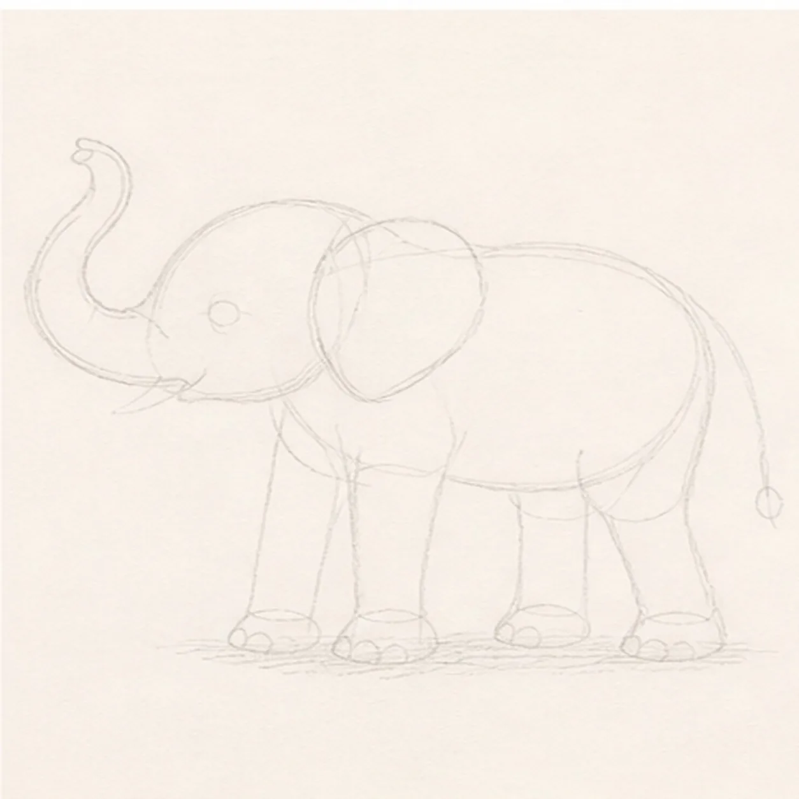
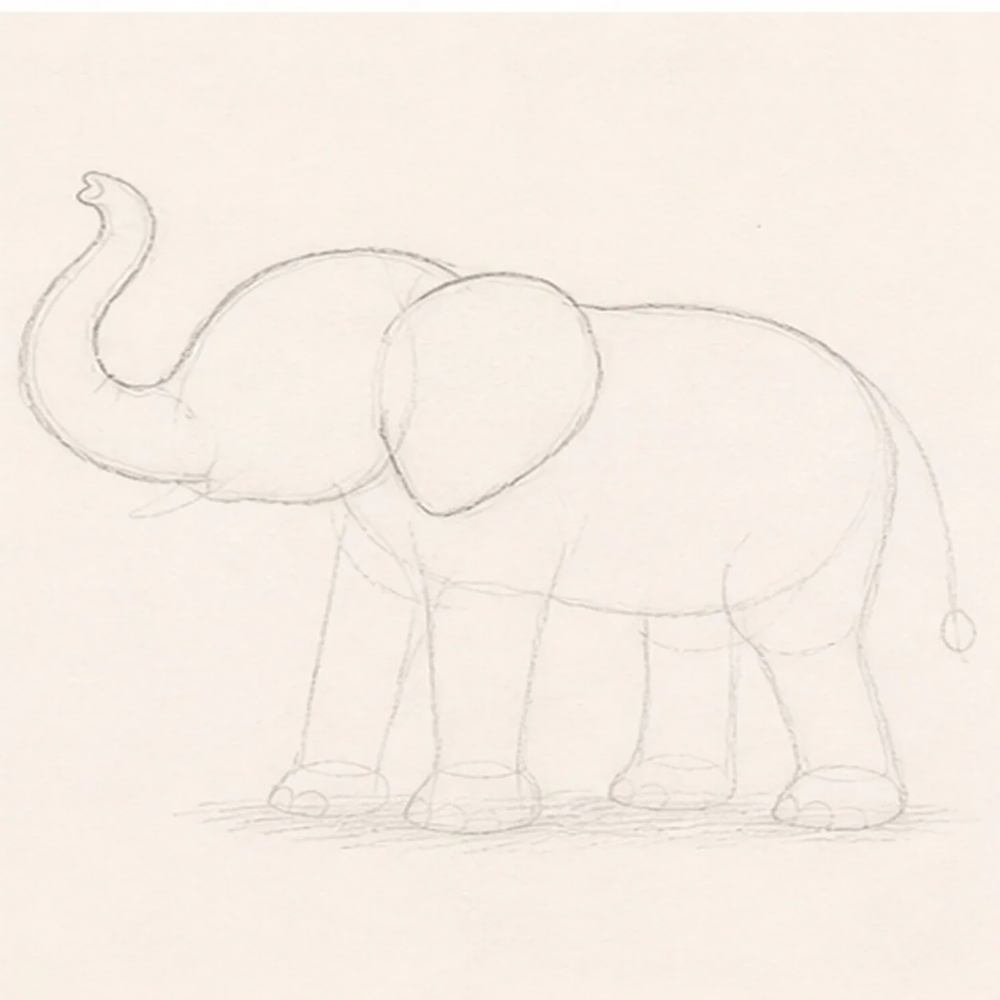
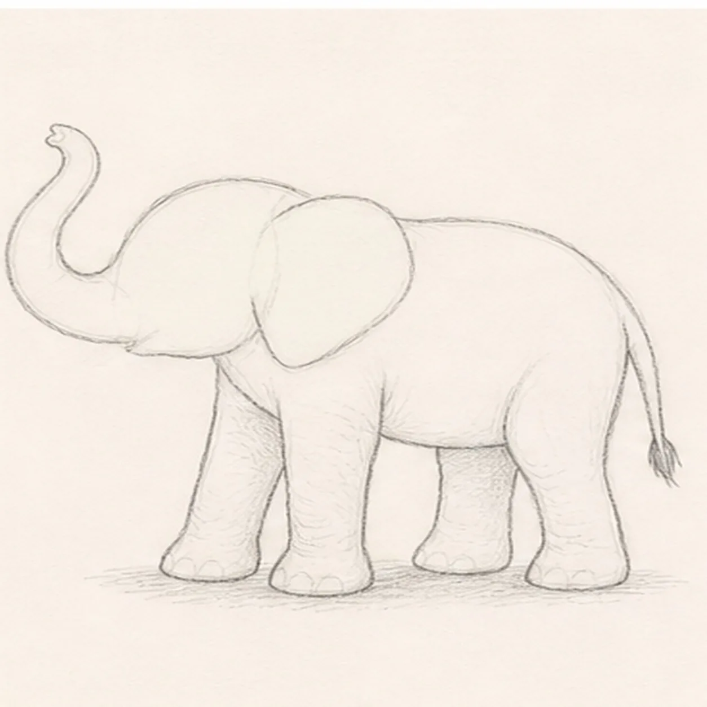
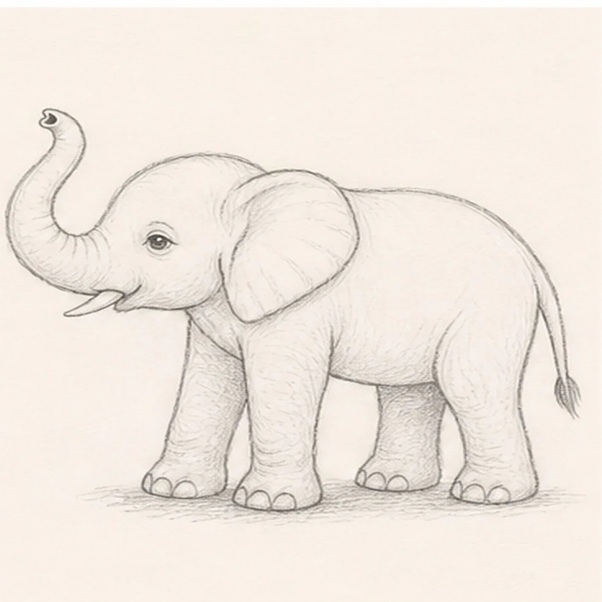
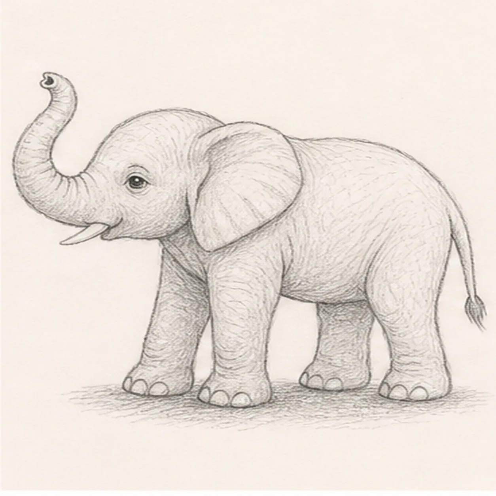
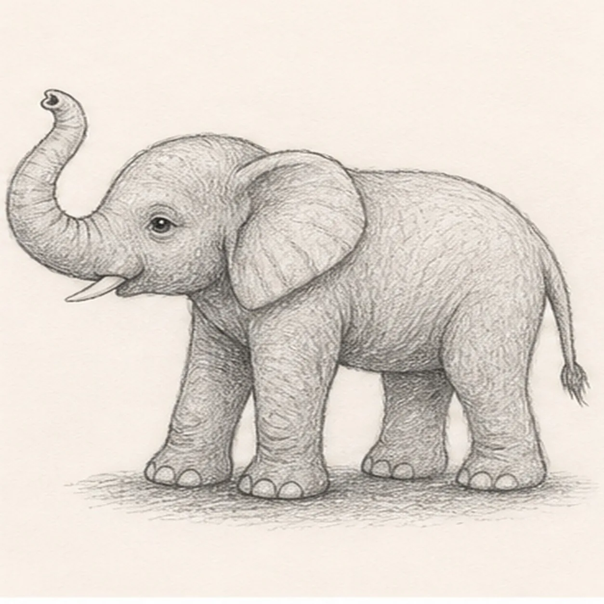
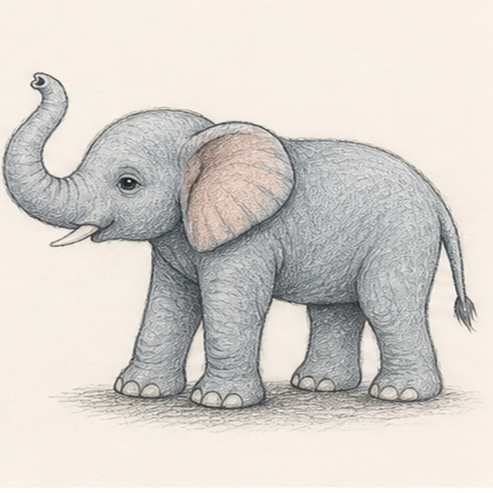

From the archive
Let's draw an elephant calf with a raised trunk
Treat this as one small practice round: build the subject lightly, notice the shapes, then darken only the lines that help the finished sketch.
-
01

Map the calf gesture
Use pale graphite to place the head and body masses, upward trunk route, one visible ear, exactly four leg axes, the tail route, eye and tusk anchors, toenail routes, open-paper highlights, and one broken ground-shadow footprint.
Sketch tip: Ghost the trunk curve and body arc two or three times before touching down, then compare the four leg gaps under the belly. Mark the ear, tusk, eye, feet, and shadow now so later contours and value can stop around them.
-
02

Wrap the head trunk and ear
Build one loose calf silhouette with a rounded head, broad body, upward-curled trunk, and one large visible near ear while preserving every pale leg, tail, face, highlight, and shadow reserve.
Sketch tip: Simplify the outside edge into a few long arcs instead of tracing wrinkles. Rotate the page for the trunk, hide the far ear completely behind the head, and stop the belly contour at all four reserved leg attachments.
-
03

Stand the calf on four legs
Add exactly four sturdy legs with rounded feet plus one slim tufted tail on their reserved routes, keeping the two smaller far legs visibly behind the near pair.
Sketch tip: Block each leg as a soft taper before drawing toes. Compare the negative spaces between the four legs, and let the far pair disappear only where the near legs physically overlap them.
-
04

Place the gentle face and feet
Add one calm visible eye, one small tusk, the trunk opening, simple rounded toenail marks, and a few broad ear folds without changing the pose.
Sketch tip: Place the eye below the forehead arc and aim the small tusk from the reserved mouth corner. Keep the toenail shapes simple and uneven, then pull each ear fold from its attachment toward the outer edge.
-
05

Add the skin rhythm and shadow
Add sparse wrinkles along the established trunk, joints, belly, and ear, then place directional hatching and the reserved broken ground shadow.
Sketch tip: Curve each wrinkle around the form and leave quiet paper between groups. Break the shadow at every planted foot so the calf feels grounded without sitting on a heavy dark oval.
-
06

Build the graphite volume
Layer broad graphite values over the established calf and shadow while preserving the eye, tusk, folds, toenail marks, and open-paper highlights.
Sketch tip: Use the side of the 2B pencil on the body and ear, then turn to the point around the eye, trunk, and feet. Change hatch direction between the head, legs, and belly so the large masses keep their volume.
-
07

Layer the quiet elephant color
Glaze restrained blue-gray pencil over the established body and dusty rose inside the established near ear while preserving graphite grain, highlights, and anatomy landmarks.
Sketch tip: Build two light color passes instead of one waxy coat, following the trunk and body curves. Keep the eye, tusk, toenails, and paper highlights clean, and let graphite remain the darkest material.
-
08

Settle the raised-trunk finish
Strengthen selected established contours, deepen the same graphite and colored-pencil values, clarify existing paper highlights, and soften only pale guides that distract.
Sketch tip: Count one visible ear, four legs, one eye, one tusk, one trunk opening, and one tail before stopping. Try a different ear tint or trunk curl in your own sketch if you like, but keep the leg order and handmade pencil tooth readable.